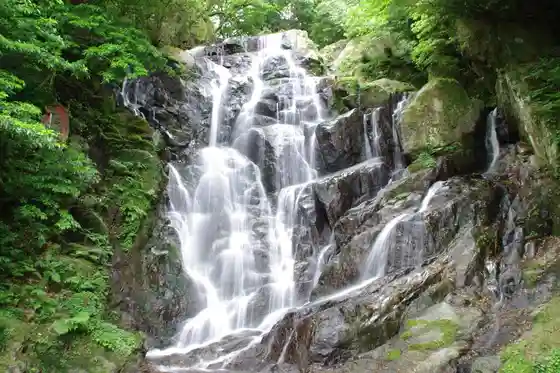
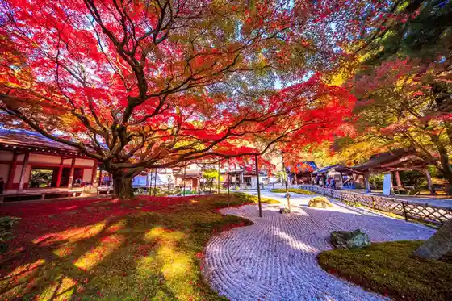

Sakurai Futamigaura
Itoshima, Fukuoka · 092-322-2098 · Official / source link
Kai Ya no Daimon
Itoshima, Fukuoka · 092-328-2012 · Official / source link
Shiroito Falls
Itoshima, Fukuoka · 092-323-2114 · Official / source link

Ikazuchiyama Sen Jo Tera Daihi Oin
Itoshima, Fukuoka · 092-323-3547 · Official / source link

Ichiran Forest Itoshima
Itoshima, Fukuoka · 050-3733-4433 · Official / source link
Heigen Rekishi Park no Kosumosu
Itoshima, Fukuoka · 092-322-2098 · Official / source link
Kamiari Shrine (Jinseki)
Itoshima, Fukuoka · Official / source link
Mamushi Baths
Itoshima, Fukuoka · 092-329-3003 · Official / source link
Ikazuchiyama Sen Jo Tera Daihi Oin Dai Kaede no Autumn Leaves
Itoshima, Fukuoka · 092-323-3547 · Official / source link
Hako Shima Shrine
Itoshima, Fukuoka · Official / source link
Kai Ya no Daimon Park (Nature Promenade)
Itoshima, Fukuoka · 092-322-2098 · Official / source link
Fuku Fuku Village (Fukuyoshi Fureai Koryu Center)
Itoshima, Fukuoka · 092-326-6886 · Official / source link
Tateishi Yama Kara no Zekkei
Itoshima, Fukuoka · 092-322-2098 · Official / source link
Ane Ko no Hama (Naki Suna)
Itoshima, Fukuoka · 092-326-6336 · Official / source link
Ito no Yu Dokoro
Itoshima, Fukuoka · 092-331-1000 · Official / source link
Kai Ya Beach
Itoshima, Fukuoka · 092-322-2098 · Official / source link
Heigen Rekishi Park
Itoshima, Fukuoka · 092-323-2093 · Official / source link
Itoshima Kaki Koya
Itoshima, Fukuoka · 092-328-2311 · Official / source link